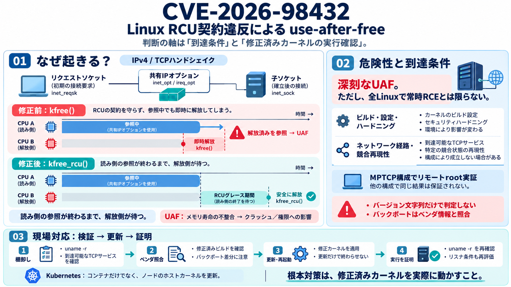

Linux Kernel CVE-2026-98432: Critical TCP Use-After-Free, No RHEL or Ubuntu Fix Yet – Rescana
Exploitation status. No vendor, CERT or the kernel CVE team reports exploitation in the wild. Not in CISA KEV (catalog v…

Exploitation status. No vendor, CERT or the kernel CVE team reports exploitation in the wild. Not in CISA KEV (catalog v…
Security firm DepthFirst published its research and exploit on September 22, 2026, demonstrating the attack against Ubun…
Apply the upstream Linux kernel patches referenced by commits 099bfcbd0c16, 0e2210af4397, 6bab90729215, a04dcc784959, b6…
## The seven CVEs disclosed June 29, 2026 [...] details and NVD scores at the linked CVE pages. [...] ## Who is af…
### CVE-2026-29146 | High | EncryptInterceptor padding oracle attack [...] ### CVE-2026-24880 | Low | Request smuggling …